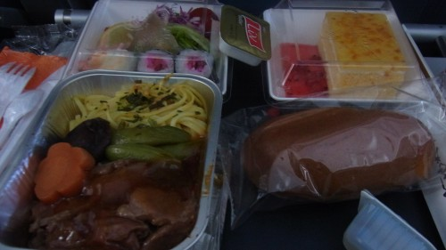
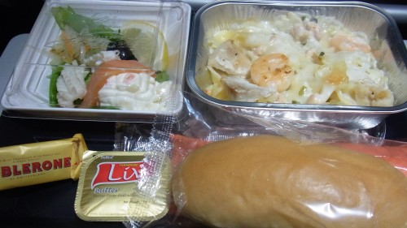
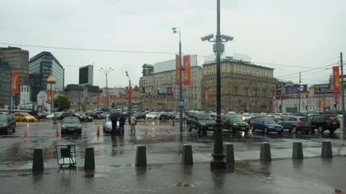
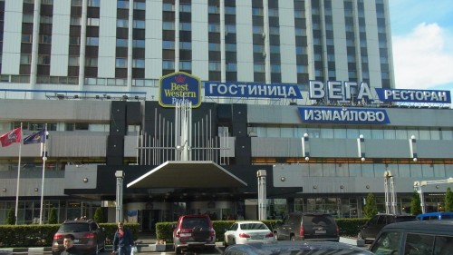
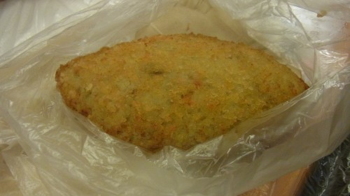

ICPC World Finals 2014 0日目～1日目
binding.pryでICPCのWorld Finalsに参加した。メンバーは@osa_k, @tokoharu_sakura, @mikecat_mixcとコーチの@ria_rai。
0日目 (2014/06/20)
binding.pryの壮行会を開催してもらう。
居酒屋で四万十川という日本酒があったので、40010にあやかろうとか言ってゲン担ぎに飲む。
1日目 (2014/06/21)
家に帰って準備を整えたら2時とかで、これはもう寝ないほうがいいんじゃないかと思って（成田空港集合が9時で、5時半くらいには家を出る必要があった）DQ6を始める。デスタムーアにボコボコにされる。
そんなことをしていたらいい感じの時間になったので家を出る。バスで行こうと思っていたけど、セブンイレブンではチケットの発券ができないという問題に引っかかって放棄。成田エクスプレスで向かう。
空港でWi-fiを受け取り、チームメンバーと合流。
今回、趣味で出入国審査の自動化ゲート登録をしてみた。ただ、登録してから出国側のゲートの位置が分からず、人のいる方から出てしまった……（ゲートがあまり目立たない上、使ってる人が全然いないので一見行き止まりに見える）。
飛行機に乗ってモスクワへ。寝たり、機内食を食べたり、RHGを読んだり（今更）して過ごす。
 
モスクワに着いたら、雨が降っていた。傘持ってない……。

入国審査の待ち部屋が天井の高いドーム型できれいだったんだけど、流石に写真は撮れなかった。残念。
モスクワで一泊するために、Aeroexpressに乗ってベラルースカヤへ移動。そこから更に地下鉄でパルチザンスカヤへ移動を試みる。
地下鉄はたくさん路線あるけど、それぞれ色分けされてるらしいし余裕やろ～～～とか思っていたら、見事にハマる。まず、地下鉄の入り口が見つからない。これは20分くらい、雨の中あちこちをさまよって発見した。
やっとの思いで駅に入ったらまた問題が起きる。地下鉄の案内があまり親切でなく、どこが目的の路線かよく分からない。案内板も読みづらいので、とりあえず5番の路線に乗りたいのでそう描いてある方向に行こうとしていたら（これも途中で案内が消える）、ロシア人の青年に声をかけられた。相手はロシア語だか英語だかよく分からない言葉で話していて、正直何を言っているのかほとんど分からなかったけど、どうも自分たちが困っているのを見て、案内してくれようとしているらしい。路線図を見せて、パルチザンスカヤへ行きたいんだーということを身振りと英語で説明すると、なんとなく分かってくれた雰囲気になって、ついて来いと言うので付いていく。すると、車体に青いラインの入った電車がちょうど入線してきて、これに乗れという。5番の路線って地図だと茶色なんだけど、本当に分かってくれてるんだろうか……。
とりあえず青年を信じて乗ってみると、これが当たりだった。どうも路線の色と車体のラインの色は対応していないらしい。ひどい。青年はその後の乗り換え方も教えてくれて、途中の駅で去っていった。すごく親切な人だった……。
このへん、色々面白いものがあったんだけど、ロシアの地下鉄は写真撮っちゃいけないという話を聞いたりしていたので、あまり写真がない。撮った瞬間にとっ捕まるという雰囲気でもなかったけど……。
なんやかんやでHotel Vegaに到着。

とりあえずお腹が空いたので、近くの食料品店に買い物に行ってみる。並んでる商品を名前で指定して取ってもらう形式で、詰んだかと思ったものの、身振りでがんばると意外と通じるのでなんとかなった。
よく分からないカレーパンみたいな物体を買った。小麦粉を揚げたものかと思ったのだが、中身は魚のすり身をコロッケのようにして揚げたものだった。おいしいけど塩が強くて、全部食べきれなかった。

シャワーを浴びて寝る。